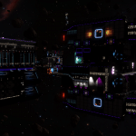

The Bowman-class is a class of Science Vessel.
The class consists of a science module on the front, a long central superstructure with a communications module in the middle, and a drive module on the rear.
Hackable Data Transmitter and Hackable Comms Array are mounted on the drive module. The Cargo Bay can be found on the communications module. The Ship Log Uplink is generally mounted on the nose of the ship.
Its default Cargo of around 250 tons is Chemicals and Technology.
A Bowman-class Researcher with call-sign BA PIN can be found for reference at the following waypoints: Ba Pin, Jarildekald, Khun, Khun, Chankopa, Aje.
- Hackable Data Transmitters: 1
- Hackable Comms Array: 1
- Cargo Bays: 1
- Total Cargo: ~250t
- Default Cargo: Chemicals (Hydrogen Fuel, Mineral Oil), Technology (Aquaponic Systems, Auto-Fabricators, Bioreducing Lichen, Resonating Separators)
(Revision CMDR goemon, 30th of April 2022)
Known examples of this class are:
 Bowman Class Science Vessel ZZW-101 - The Bowman Class Science Vessel designation ZZW-101 is expected to be in the following system, based on the last reported flight operations plan: A number of Engineer Materials are scattered nearby, and a number of ships are in the area. A Ship Log Uplink point can be located on the hull. Deploy your ship’s hardpoints...
Bowman Class Science Vessel ZZW-101 - The Bowman Class Science Vessel designation ZZW-101 is expected to be in the following system, based on the last reported flight operations plan: A number of Engineer Materials are scattered nearby, and a number of ships are in the area. A Ship Log Uplink point can be located on the hull. Deploy your ship’s hardpoints...
Pirate Cove - The Pirate Cove is an hidden Unauthorised Installation that can be found in the Kemurukamar system, in the ring of body A 1. I can be found by looking for the “Blazin’ Dynamo” POI, where there is a damaged Bowman-class Researcher, the Blazin’ Dynamo. It has a Ship Log Uplink: Virusalani Control, The Blazin’ Dynamo...